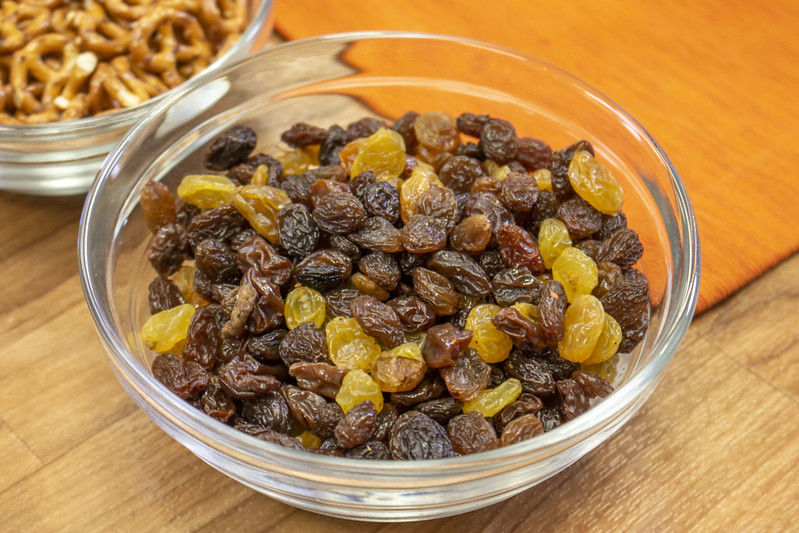

Marinated Raisins

Like sun-dried tomatoes, raisins go well with olive oil and chili.
Place a spoonful on a slice of baguette, or cheese, or both.
Ingredients
- Raisins: 100g
- Olive oil: 100cc
- Wine vinegar: 2 tbsp
- Salt: 1 tsp
- Dried whole red chili pepper: 1
- Dried basil: 1/2 tsp
- Dried oregano: 1/2 tsp
Steps
- Soak raisins in warm water for 30 minutes.
- Drain and pat dry with paper towel.
- Add salt to vinegar and mix well.
- Slowly add the olive oil and whisk until the mixture is a little thick.
- Add basil and oregano.
- Place raisins and chili in a sterilized jar. Pour the mixture so that all the raisins are covered. (Add more olive oil if needed.)
- Close the lid and store in a dark, cool place. They are ready to eat after a few days.